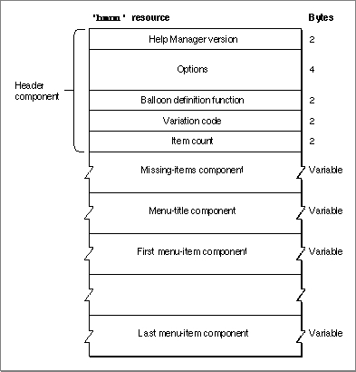
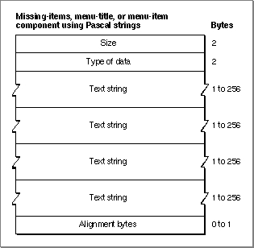
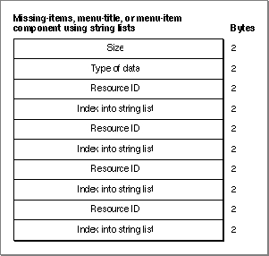
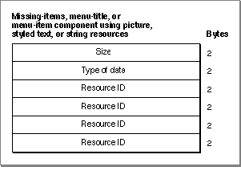
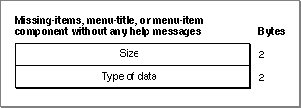
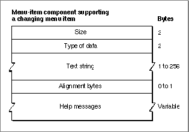
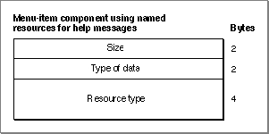

Legacy Document
Important: The information in this document is obsolete and should not be used for new development.
Important: The information in this document is obsolete and should not be used for new development.


The Menu Help Resource
To provide help balloons for a menu--pull-down, pop-up, or hierarchical--that uses the standard menu definition procedure, you can create a menu help resource. A menu help resource is a resource of type'hmnu'; in it, you specify help balloons for the menu title and for each item in the menu. You create a separate'hmnu'resource for each menu. All'hmnu'resources must have resource IDs greater than 128.The format of a Rez input file for an
'hmnu'resource differs from its compiled output form. This section describes the structure of a Rez-compiled'hmnu'resource. If you are concerned only with creating'hmnu'resources, see "Providing Help Balloons for Menus" beginning on page 3-24. That section gives a detailed description, using several code samples, of how to use Rez input files to create'hmnu'resources.An
'hmnu'resource consists of a header component, a missing-items component, a menu-title component, and a variable number of menu-item components. Figure 3-23 shows the general structure of a compiled'hmnu'resource.Figure 3-23 Structure of a compiled menu help (
'hmnu') resource If you examine a compiled version of an
'hmnu'resource, you find that the header component consists of the following elements:
The Help Manager identifies each component by its order in the resource. The missing-items component always follows the header component of an
- Help Manager version. The version of the Help Manager to use; specified in a Rez input file with the
HelpMgrVersionconstant.- Options. The sum of the values of available options, described in "Specifying Options in Help Resources" beginning on page 3-22.
- Balloon definition function. The resource ID of the window definition function used for drawing the help balloon. The standard balloon definition function is of type
'WDEF'with resource ID 126; this can be specified by the number 0 in the Rez input file.- Variation code. A number signifying the preferred position of the help balloon relative to the hot rectangle. The balloon definition function draws the frame of the help balloon based on the variation code specified here. The eight variation codes and how they affect the standard balloon definition function are illustrated in Figure 3-4 on page 3-9.
- Item count. The number of remaining components--including the missing-items, menu-title, and menu-item components--defined in the rest of this resource.
'hmnu'resource. The menu-title component always follows the missing-items component. Then a variable number of menu-item components are stored in this resource. The Help Manager determines the end of the'hmnu'resource by using the item count information in the header component.The structures of the missing-items component, the menu-title component, and the menu-item components depend on identifiers specified inside the components. The identifiers used in a Rez input file are described in "Specifying the Format for Help Messages" on page 3-21.
The missing-items component, the menu-title component, and the menu-item components can each specify four different help messages:
An empty string or a resource ID of 0 for any messages in the menu-title or menu-item components causes the Help Manager to use the appropriate help message contained in the missing-items component.
- First help message.
- In the missing-items component, this is the help message for missing enabled items.
- In the menu-title component, this is the help message for the enabled menu title.
- In all subsequent menu-item components, this is the help message for enabled menu items.
- Second help message.
- In the missing-items component, this is the help message for missing items that are dimmed by the application.
- In the menu-title component, this is the help message for the menu title when the application dims it.
- In all subsequent menu-item components, this is the help message for menu items when the application dims them.
- Third help message.
- In the missing-items component, this is the help message for missing enabled-and-checked items.
- In the menu-title component, this is the help message for the menu title when system software dims it at the appearance of an alert box or a modal dialog box.
- In all subsequent menu-item components, this is the help message for enabled-and-checked menu items.
- Fourth help message.
- In the missing-items component, this is the help message for missing enabled-and-marked items.
- In the menu-title component, this is the help message for all menu items when system software dims them at the appearance of an alert box or a modal dialog box.
- In all subsequent menu-item components, this is the help message for enabled-and-marked menu items.
Since they all adhere to the formats specified by the previously described identifiers, the missing-items component, the menu-title component, and the menu-item components can have similar structures. The Help Manager determines the end of a component by examining its length, which is stored in the first 2 bytes of the component.
Figure 3-24 shows the structure of a component that stores its help messages as Pascal strings within the
'hmnu'resource itself.Figure 3-24 Structure of an
'hmnu'component compiled with theHMStringItemidentifier If you examine a compiled version of an
'hmnu'resource, you find that a component identified in a Rez input file by theHMStringItemidentifier consists of the following elements:
Figure 3-25 shows the structure of an
- Size. The number of bytes contained in this component.
- Type of data. The value 1 is specified here when the help messages are stored as Pascal strings within this component.
- Text string. The first help message (as previously described).
- Text string. The second help message (as previously described).
- Text string. The third help message (as previously described).
- Text string. The fourth help message (as previously described).
- Alignment bytes. Zero or one bytes used to make the previous text strings end on a word boundary.
'hmnu'component that specifies its help messages as text strings stored in string list ('STR#') resources.Figure 3-25 Structure of an
'hmnu'component compiled with theHMStringResItemidentifier If you examine a compiled version of an
'hmnu'resource, you find that a component identified in a Rez input file by theHMStringResItemidentifier consists of the following elements:
Three more pairs of resource IDs/index numbers follow. The text strings that these pairs refer to are used for the second, third, and fourth help messages, respectively.
- Size. The number of bytes contained in this component.
- Type of data. The value 3 is specified here when the help messages for this component are stored in string list (
'STR#') resources.- Resource ID. The resource ID of an
'STR#'resource.- Index into the string list resource. A number used as an index to a particular text string within the
'STR#'resource. This text string is used for the first help message (as previously described).
Figure 3-26 shows the structure of an
'hmnu'component that specifies its help messages in picture ('PICT') resources, styled text ('TEXT'and'styl') resources, or string ('STR ') resources.Figure 3-26 Structure of an
'hmnu'component compiled with theHMPictItem,HMTEResItem, orHMSTRResItemidentifier If you examine a compiled version of an
'hmnu'resource, you find that a component identified in a Rez input file by either theHMPictItem,HMTEResItem, orHMSTRResItemidentifier consists of the following elements:
Three more resource IDs follow; the Help Manager uses these resources (either
- Size. The number of bytes contained in this component.
- Type of data.
- The value 2 is specified here when the help messages for this component are stored in
'PICT'resources.- The value 6 is specified here when the help messages for this component are stored as styled text--that is, in both
'TEXT'and'styl'resources.- The value 7 is specified here when the help messages for this component are stored in
'STR 'resources.
- Resource ID.
- The resource ID of a
'PICT'resource when the value 2 is specified as the type of data. The Help Manager uses the picture contained in this resource for the first help message (as previously described).- The resource ID common to both a
'TEXT'and an'styl'resource when the value 6 is specified as the type of data. The Help Manager uses the styled text specified by these resources for the first help message.- The resource ID of an
'STR 'resource when the value 7 is specified as the type of data. The Help Manager uses the text contained in this resource for the first help message.
'PICT','TEXT'and'styl', or'STR ') for the second, third, and fourth help messages, respectively (as previously described).Figure 3-27 shows the structure of an
'hmnu'component that specifies no help messages.Figure 3-27 Structure of an
'hmnu'component compiled with theHMSkipItemidentifier If you examine a compiled version of an
'hmnu'resource, you find that a component identified by theHMSkipItemidentifier consists of the following elements:
For menu-item components, two additional identifiers are available:
- Size. The value 4, for the number of bytes contained in this component.
- Type of data. The value 256.
HMCompareItemandHMNamedResourceItem. When theHMCompareItemidentifier is specified, the Help Manager compares a string specified in the component against the current menu item. If the string matches the current menu item, the Help Manager uses the help messages specified in the rest of the component, shown in Figure 3-28. This type of component is useful for a menu item that can change names.Figure 3-28 Structure of a menu-item component compiled with the
HMCompareItemidentifier If you examine a compiled version of an
'hmnu'resource, you find that a component identified in a Rez input file by theHMCompareItemidentifier consists of these elements:
When the identifier
- Size. The number of bytes contained in this component.
- Type of data. The value 512 appears here when the Help Manager is to use the help messages specified in this component only when the current menu item matches a specified text string.
- Text string. The string against which to compare the current menu item. If the current menu item matches this string, then the Help Manager uses the help messages specified in this component.
- Alignment bytes. Zero or one bytes used to make the previous text string end on a word boundary.
- Help messages. The four help messages for the menu item. The structure may follow that of any of the previously described menu-item components; that is, this element consists of a value representing the format of the help messages specified in the rest of the component, the size of the rest of the component, and specifications for four actual help messages for the menu item.
HMNamedResourceItemis specified, the Help Manager retrieves help messages from a resource that matches the name and state of the current menu item.Figure 3-29 shows the format of a menu-item component that uses named resources for help messages.
Figure 3-29 Structure of a menu-item component compiled with the
HMNamedResourceItemidentifier If you examine a compiled version of an
'hmnu'resource, you find that a component identified in a Rez input file by theHMNamedResourceItemidentifier consists of these elements:
- Size. The number of bytes contained in this component.
- Type of data. The number 1024 is specified here when the Help Manager is to use named resources for help messages.
- Resource type. The resource type (
'STR ','STR#','PICT', or, for text,'TEXT') of the resource that contains the help messages for the current menu item. The Help Manager then uses theGetNamedResourcefunction to find the resource with the same name as the current menu item. (If'TEXT'is specified, the Help Manager also uses the style information contained in an'styl'resource with the same name.) If
the menu item is dimmed, the Help Manager appends an exclamation point (!) to the menu item string and searches for a resource by that name. If the menu item is enabled and marked with a checkmark or other mark, the Help Manager appends the mark to the menu item string and looks for a resource with that name.